civics
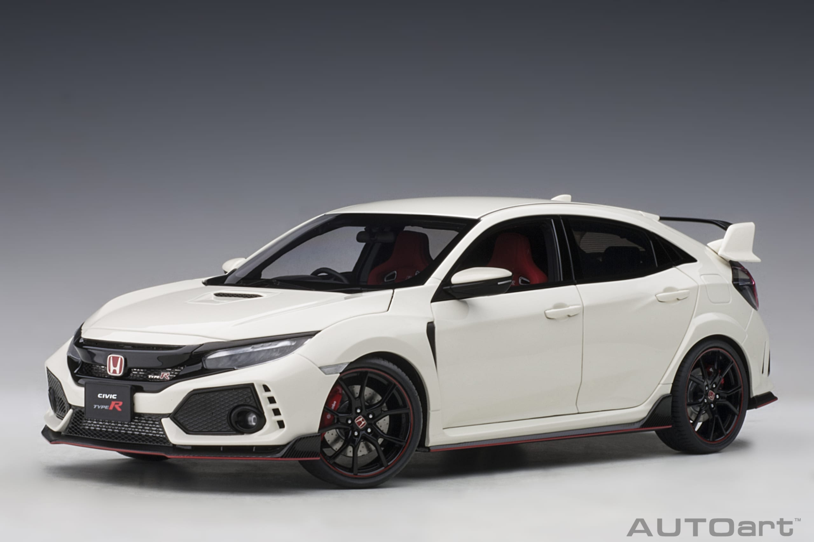
- 2017 Honda civic fk8.
- specificaties:
- pk: 320 pk
- koppel: 400 nM
- motorinhoud: 2.0 L 4-cilinder
- topsnelheid: 272 km/h
- 0-100km/h: 5.5 seconden
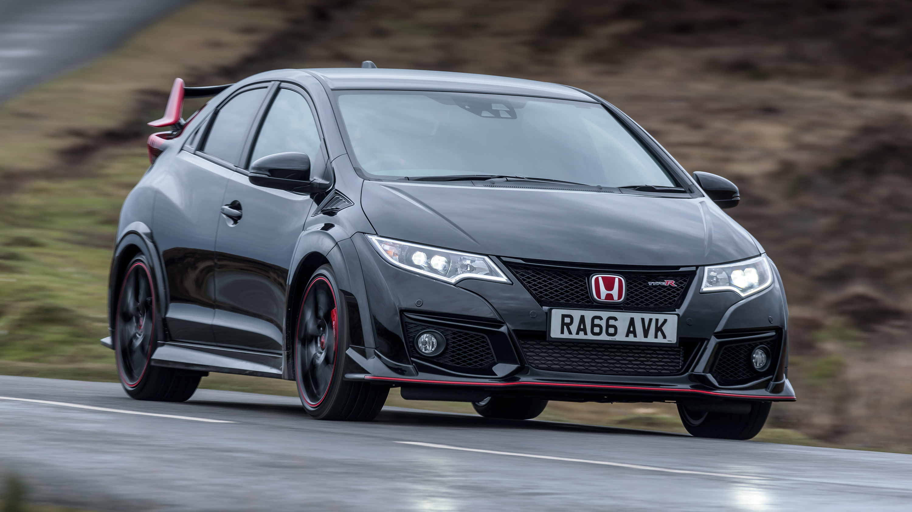
- 2012 Honda civic fk2.
- specificaties:
- pk: 310 pk
- koppel: 400 nM
- motorinhoud: 2.0 L 4-cilinder
- topsnelheid: 270 km/h
- 0-100km/h: 5.2 seconden
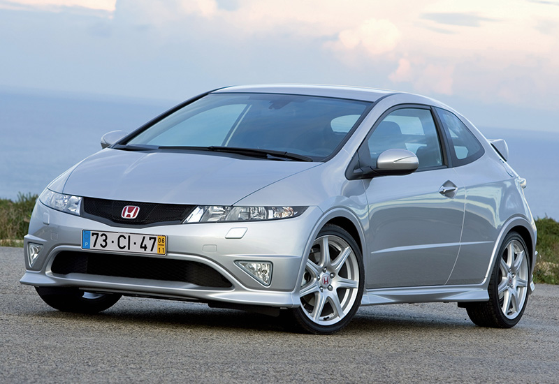
- 2007 Honda civic fn2.
- specificaties:
- pk: 201 pk
- koppel: 193 nM
- motorinhoud: 2.0 L 4-cilinder
- topsnelheid: 205 km/h
- 0-100km/h: 6.8 seconden
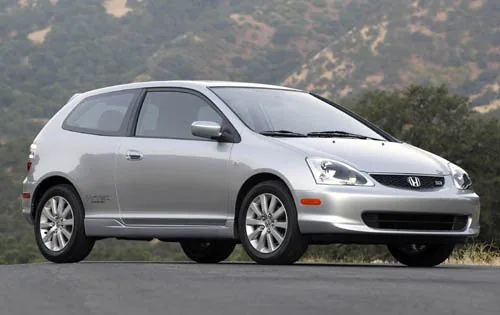
- 2004 Honda civic ep3.
- specificaties:
- pk: 200 pk
- koppel: 196 nM
- motorinhoud: 2.0 L 4-cilinder
- topsnelheid: 235 km/h
- 0-100 km/h: 6.6 seconden
- acceleratie + geluid klik hier
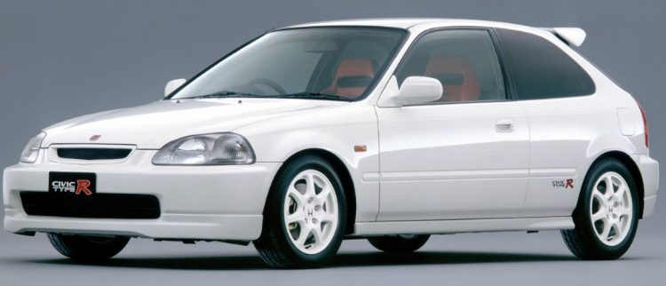
- 1997 Honda civic ek9.
- specificaties:
- pk: 185 pk
- koppel: 163 nM
- motorinhoud: 1.6 L 4-cilinder
- topsnelheid: 235 km/h
- 0-100 km/h: 6.8 seconden
- om deze auto in actie te zien klik hier
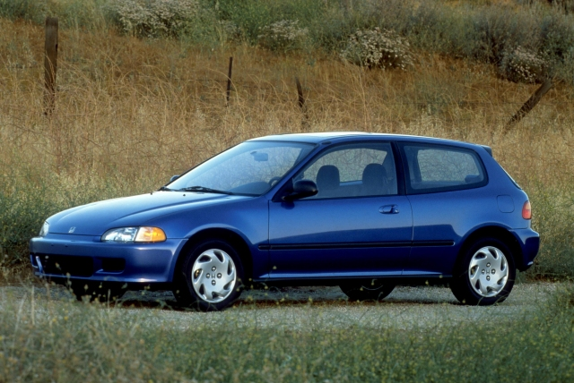
- 1991 Honda civic eg6.
- specificaties:
- pk: 160 pk
- koppel: 153 nM
- motorinhoud: 1.6 L 4-cilinder
- topsnelheid: 215 km/h
- 0-100 km/h: 7.3 seconden
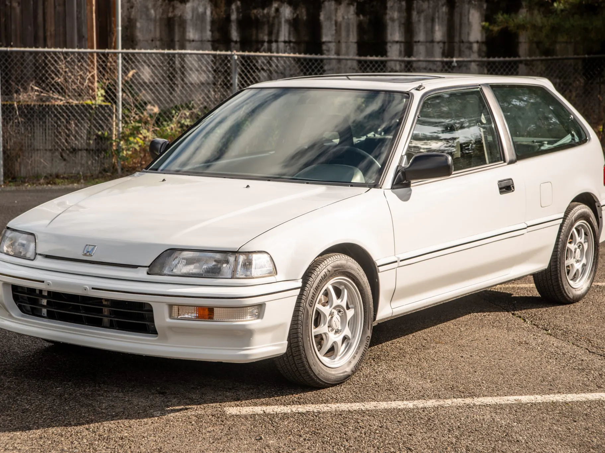
- 1988 Honda civic 4e generatie.
- specificaties:
- pk: 110 pk
- koppel: 134 nM
- motorinhoud: 1.6 L 4-cilinder
- topsnelheid: 192 km/h
- 0-100 km/h: 8.9 seconden

- 1984 Honda civic 3e generatie.
- specificaties:
- pk: 71 pk
- koppel: 105 nM
- motorinhoud: 1.6 L 4-cilinder
- topsnelheid: 160 km/h
- 0-100 km/h: 11.5 seconden
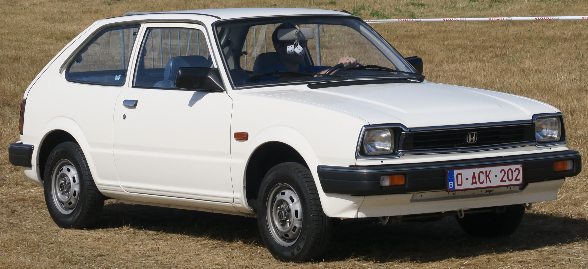
- 1980 Honda civic 2e generatie.
- specificaties:
- pk: 67 pk
- koppel: 105 nM
- motorinhoud: 1.5 L 4-cilinder
- topsnelheid: 144 km/h
- 0-100 km/h: 16.2 seconden
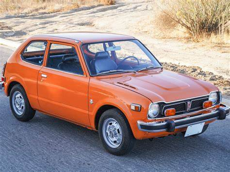
- 1972 Honda civic 1e generatie.
- specificaties:
- pk: 60 pk
- koppel: 84 nM
- motorinhoud: 1.2 L 4-cilinder
- topsnelheid: 145 km/h
- 0-100 km/h: 14.5 seconden
Bekende modellen
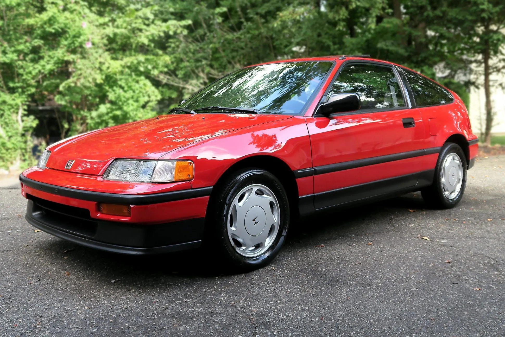
- 1990 Honda crx.
- specificaties:
- pk: 150 pk
- koppel: 144 nM
- motorinhoud: 1.6 L 4-cilinder
- topsnelheid: 222 km/h
- 0-100 km/h: 7.2 seconden
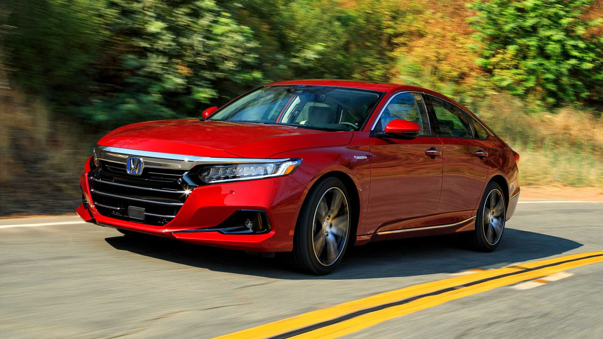
- 2021 Honda accord.
- specificaties:
- pk: 192 pk
- koppel: 257 nM
- motorinhoud: 1.2 L 4-cilinder
- topsnelheid: 186 km/h
- 0-100 km/h: 7.1 seconden
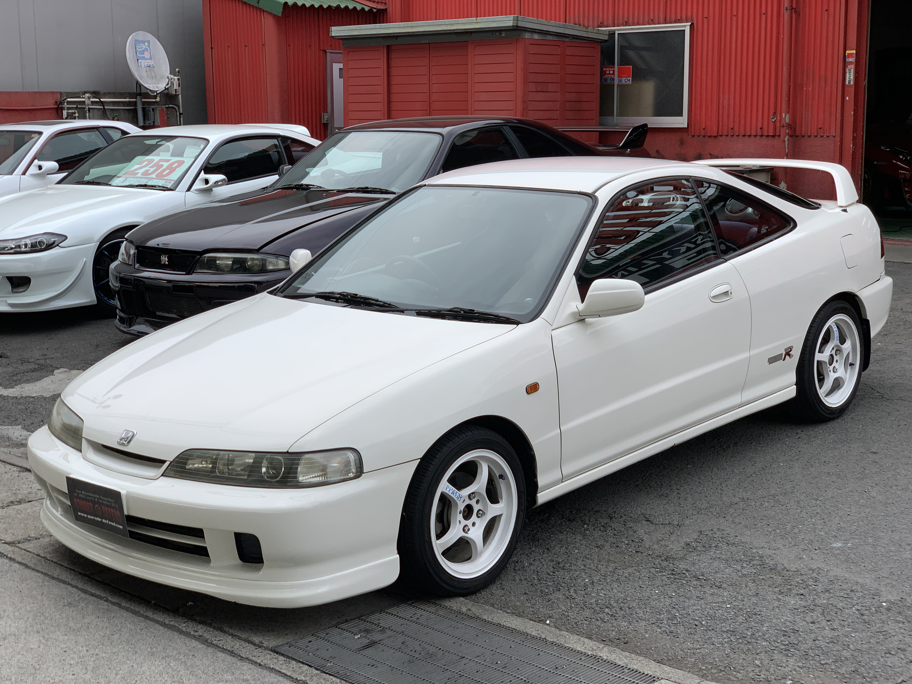
- 1995 honda integra.
- specificaties:
- pk: 190 pk
- koppel: 178 nM
- motorinhoud: 1.8 L 4-cilinder
- topsnelheid: 133 km/h
- 0-100 km/h: 6.7 seconden
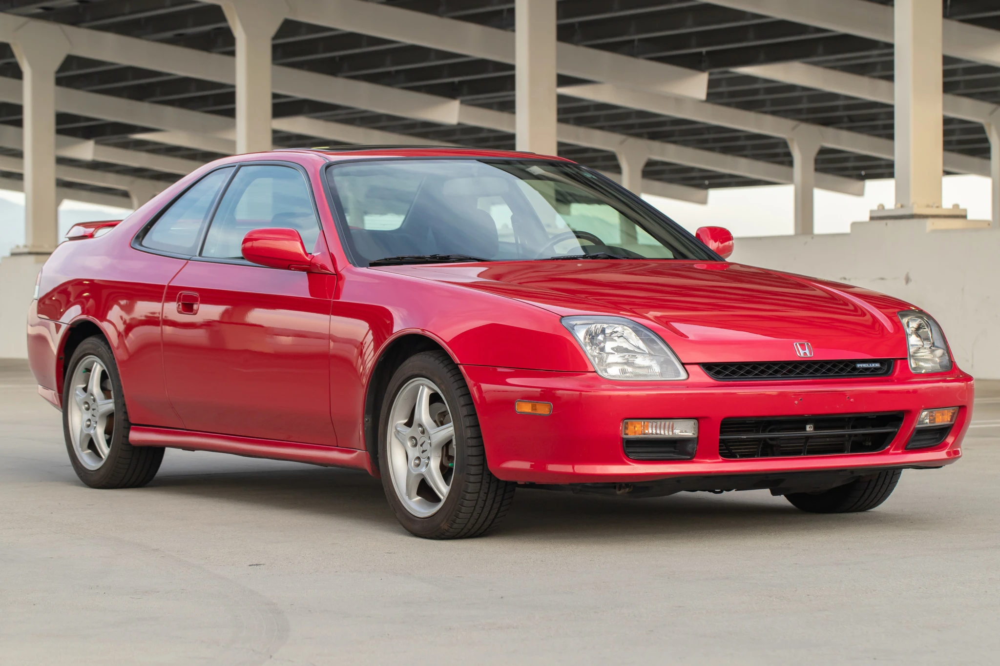
- 2001 honda prelude.
- specificaties:
- pk: 133 pk
- koppel: 179 nM
- motorinhoud: 2.0 L 4-cilinder
- topsnelheid: 201 km/h
- 0-100 km/h: 9.2 seconden
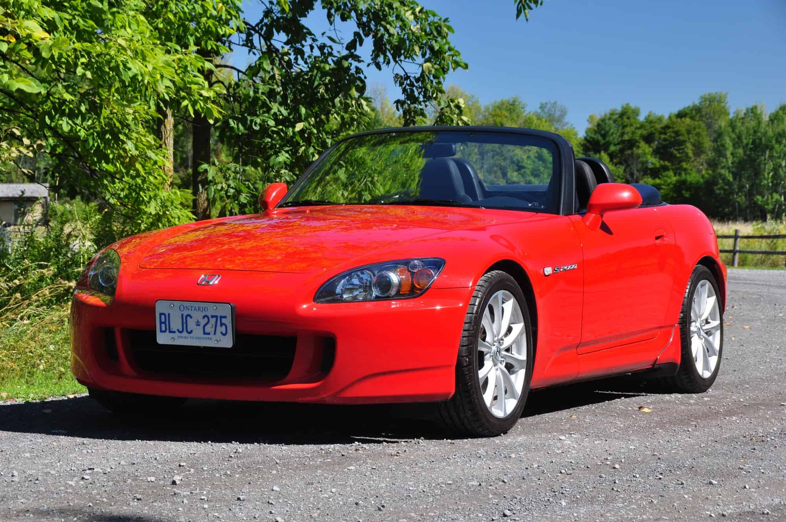
- 1999 honda s2000 ap1.
- specificaties:
- pk: 240 pk
- koppel: 108 nM
- motorinhoud: 2.0 L 4-cilinder
- topsnelheid: 241 km/h
- 0-100 km/h: 6.2 seconden
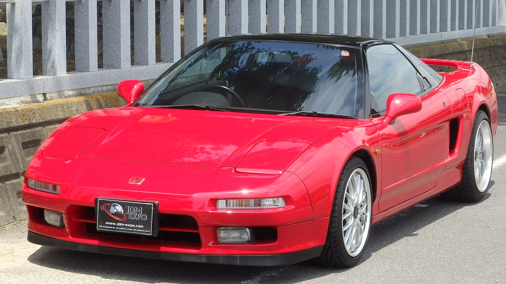
- 1995 honda nsx.
- specificaties:
- pk: 273 pk
- koppel: 284 nM
- motorinhoud: 3.0 L V-6
- topsnelheid: 2701 km/h
- 0-100 km/h: 5.9 seconden

- 2017 honda nsx.
- specificaties:
- pk: 573 pk
- koppel: 550 nM
- motorinhoud: 3.5 L V-6 + drie electro motoren
- topsnelheid: 307 km/h
- 0-100 km/h: 3.0 seconden
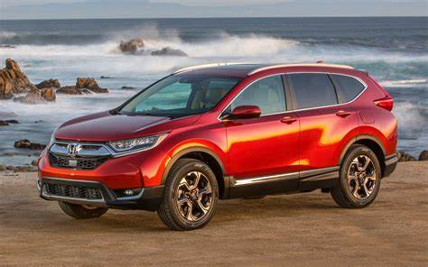
- 2017 honda crv.
- specificaties:
- pk: 173 pk
- koppel: 220 nM
- motorinhoud: 1.5 L 4-cilinder
- topsnelheid: 211 km/h
- 0-100 km/h: 9.2 seconden
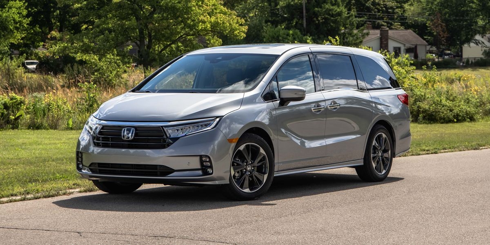
- 2021 Honda odyssey.
- specificaties:
- pk: 284 pk
- koppel: 355 nM
- motorinhoud: 3.5 L V-6
- topsnelheid: 178 km/h
- 0-100 km/h: 6.5 seconden